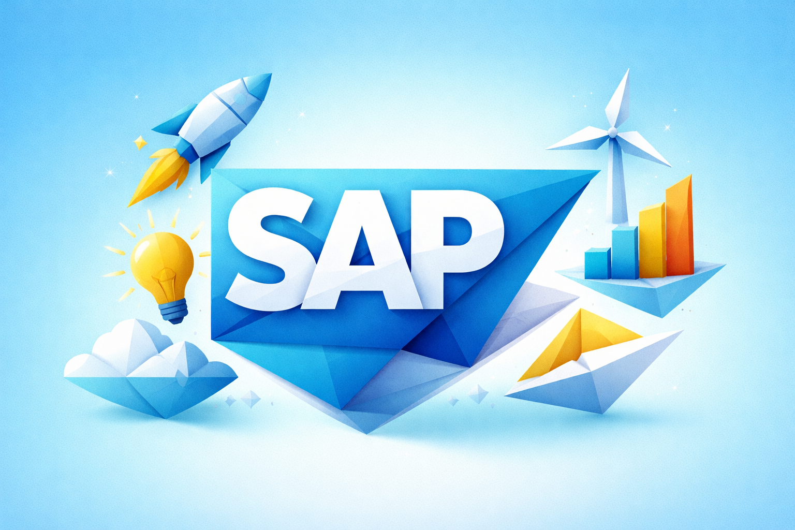
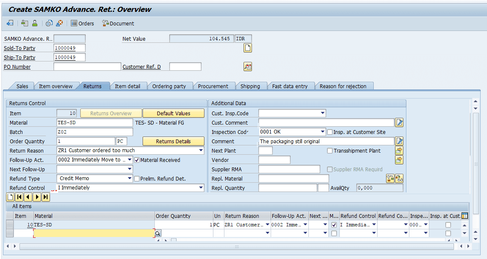
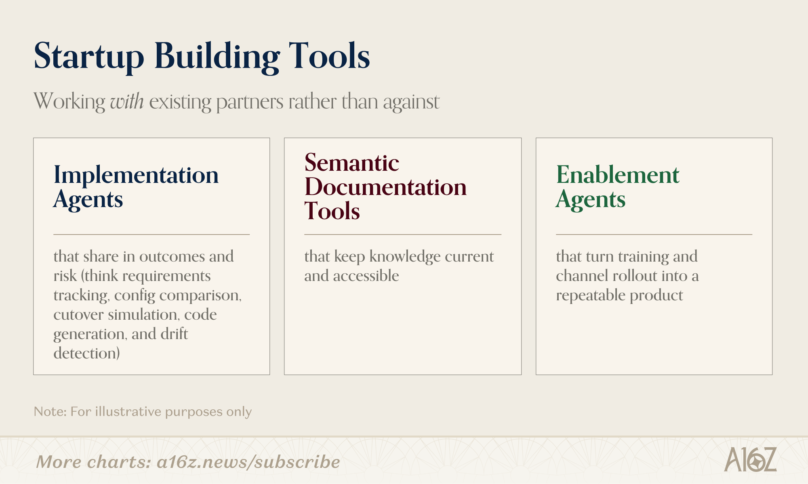
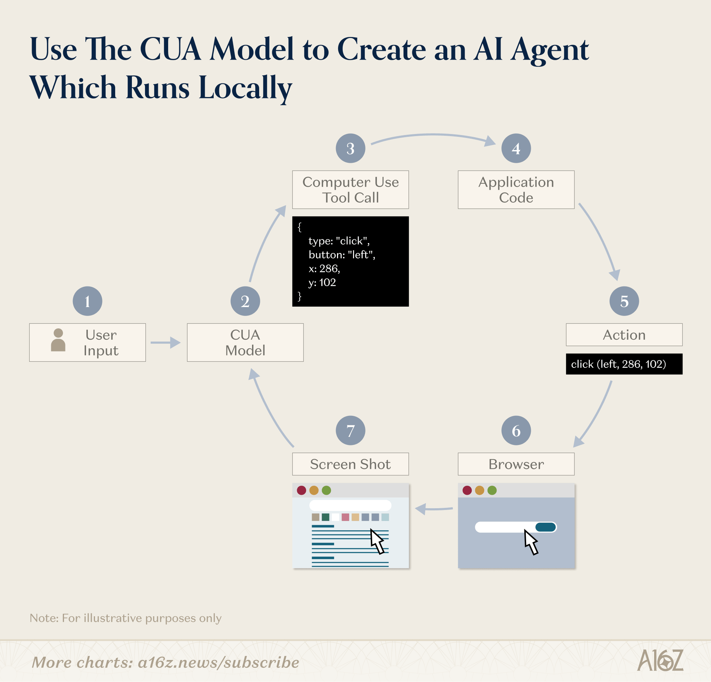
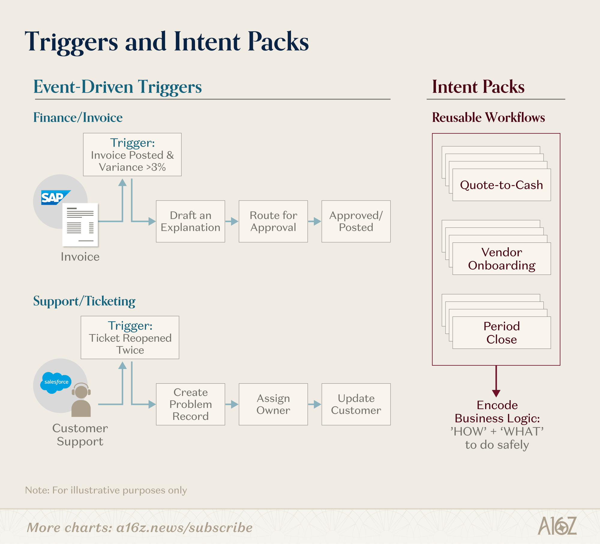

SAP 업그레이드에 7억 달러, 3년이 필요합니다. Lidl은 5억 달러를 쓰고도 전환을 포기했습니다.
AI는 레거시 ERP를 대체하지 않습니다. 그 위에 프로그래밍 가능한 레이어를 쌓는 방향으로 진화하고 있습니다.
구현, 사용, 확장 3단계에서 AI가 여는 기회는 3,800억 달러 SI 시장을 재편할 잠재력을 가지고 있습니다.
7억 달러 쓰고 3년 기다려서 받은 것이 읽기 전용 보고서다.
그걸 '디지털 전환'이라고 부르고 있다면, 전환된 건 예산뿐이다.
ERP 전환 프로젝트의 70%가 목표를 달성하지 못합니다. 그런데도 기업들은 수억 달러를 투입합니다. 왜 SAP을 버리지 못하는지, 그리고 AI가 이 교착 상태를 어떻게 풀 수 있는지가 이 글의 핵심입니다.
AI의 가장 큰 기회는 새로운 앱이 아닙니다. 이미 돌아가고 있는 시스템에서 더 많은 것을 끌어내는 것입니다. a16z가 3,800억 달러 SI 시장의 재편 시나리오를 제시합니다.
SI 시장 규모는 2023년 기준 약 3,800억 달러입니다. SAP 같은 레거시 ERP 위에는 문서화되지 않은 커스텀 프로세스가 쌓여 있습니다. ECC에서 S/4HANA로의 업그레이드에 7억 달러와 3년이 필요합니다. 디지털 근로자들은 하루 1,200번 앱을 전환하며, 주당 4시간을 잃고 있습니다. 대규모 전환 프로젝트의 70%가 목표를 달성하지 못합니다.

a16z가 제시하는 핵심 통찰은 3가지입니다.
첫째, SAP를 대체하지 말고 위에 쌓아야 합니다. 레거시 시스템은 너무 깊이 박혀 있습니다. 뽑아내는 것이 아니라 플러그인하는 것이 정답입니다. 기존 시스템 위에서 리스크와 타임라인을 줄여주는 플랫폼이 승자가 됩니다.
둘째, SAP의 강점이 곧 약점입니다. 커스텀 필드, 워크플로우, 가격 규칙이 쌓일수록 전환 비용의 해자가 됩니다. 동시에 모든 커스터마이징이 미래 업그레이드의 지뢰가 됩니다. 투자할수록 빠져나오기 어려운 구조입니다.
셋째, AI가 3단계 기회를 열어줍니다. 구현, 사용·유지보수, 확장입니다. 각 단계에서 AI는 복잡한 인간의 의도를 감사 가능한 시스템 액션으로 변환합니다.
구현은 예산 민감도가 가장 높은 단계입니다. 동시에 투자 회수가 가장 명확합니다. 회의록, 문서, 티켓 등 산재된 디스커버리를 구조화된 요구사항으로 변환합니다. 이후 프로세스 매핑, 설정 코드, 테스트 스크립트를 자동 생성합니다.
독일 Lidl은 SAP 전환에 5억 달러를 쓴 뒤 포기했습니다. 이 영역의 스타트업들이 다양한 방식으로 가치를 만들고 있습니다.
Axiamatic은 프로젝트 산출물에서 지식 그래프를 구축합니다. 요구사항과 변경관리의 숨겨진 실패를 감지합니다. Conduct는 코드·프로세스 매핑 코파일럿으로 ECC에서 S/4 전환을 가속합니다. Tessera의 AI 네이티브 SI는 기업 전환을 엔드투엔드로 관리합니다.

핵심은 가격 전략입니다. 회피된 지연 비용에 맞춰 가격을 책정합니다. CIO와 CFO가 이미 집행 중인 전환 예산에 자연스럽게 진입할 수 있습니다.
구현 이후의 일상이 문제입니다. 수십 개 화면을 탐색하고, 담당자가 이직하면 노하우가 초기화됩니다. 사용자는 필드를 찾고, 시스템 간 데이터를 미러링하며 시간을 보냅니다.
AI는 레거시 시스템을 '행동 시스템'으로 감쌉니다. Slack이나 브라우저 사이드카에 코파일럿이 상주합니다. 질문에 답하고, API가 있으면 안전한 액션을 실행합니다.
다만 기업의 중요 업무 상당수는 API로 노출되지 않습니다. 씩 클라이언트, VDI 세션, 관리자 콘솔에 갇혀 있습니다. 여기서 '컴퓨터 사용' 에이전트가 보완재가 됩니다. API 없이도 나머지 30~40% 워크플로우를 자동화합니다.

비즈니스는 계속 바뀝니다. 새 제품, 새 정책, 새 인수, 새 규제가 생깁니다. 기존에는 두 가지 선택만 있었습니다. 스위트를 커스터마이징하거나, 일회성 앱을 빌드하는 것입니다. 둘 다 유지관리 부담이 큽니다.
AI의 세 번째 기회가 여기 있습니다. 코어를 건드리지 않으면서, 그 위에 작고 거버넌스된 경험을 빠르게 출하하는 것입니다.
예를 들어 조달 분석가가 12개 SAP 트랜잭션을 돌아다니는 대신, 하나의 앱으로 공급업체 온보딩을 수행합니다. 문서 수집, 중복 검사, 승인 라우팅, SAP 기록 반영까지 한 곳에서 처리합니다.
장기적으로 이런 배포는 '인텐트 팩'으로 진화합니다. 견적, 공급업체 온보딩, 결산 등 업무 단위별로 패키징됩니다. 무엇을 할지뿐 아니라, 해당 환경에서 안전하게 실행하는 방법까지 인코딩합니다.

이 인사이트를 무시했을 때의 비용은 구체적입니다. SAP ECC에서 S/4HANA 전환에 평균 7억 달러, 3년이 소요됩니다. Lidl처럼 5억 달러를 투입하고 포기하는 사례도 있습니다.
일상 운영의 숨겨진 비용도 큽니다. 직원 1인당 하루 1,200번의 앱 전환은 주당 4시간 손실을 뜻합니다. 47%의 직원이 업무 정보를 찾는 데 어려움을 겪습니다. 연간 인건비로 환산하면 직원 100명 기준 약 2억 원 이상의 생산성 손실입니다.
현재 SAP/Salesforce/ServiceNow 위에 올릴 수 있는 AI 도구를 스캔합니다. 구현·사용·확장 3단계 중 가장 시급한 페인 포인트를 팀 리더 워크숍(2시간)으로 선정합니다. Claude에 "우리 팀이 SAP에서 반복하는 상위 5개 작업을 정리해 줘"라고 요청하면 출발점이 됩니다.
1주일간 '앱 전환 횟수', '수동 리포트 요청 빈도', '커스터마이징 건수'를 측정합니다. 이 수치가 AI 도입의 ROI 근거가 됩니다. (1시간, 데이터 수집 설계) 기대 결과: 연간 생산성 손실 규모 추정치 1장.
API가 없는 레거시 화면의 반복 작업을 식별합니다. Anthropic의 컴퓨터 사용 기능이나 UiPath 등 UI 에이전트 후보 도구를 비교합니다. BPO 비용 대비 ROI를 추산합니다. (30분, 후보 프로세스 3~5개 목록 작성)
AI 레이어가 새로운 의존성이 됩니다. SAP 위에 AI를 쌓으면 두 벤더에 동시 의존합니다. 감사 추적, RBAC, 보안 가드레일이 갖춰진 솔루션을 선택해야 합니다.
컴퓨터 사용 에이전트는 아직 초기 단계입니다. 팝업, 레이아웃 변경, 예외 상황 처리가 미흡합니다. 자동화가 오히려 위험을 키울 수 있습니다. diff, 대사, 샌드박스 실행 등 검증이 필수입니다.
출처의 이해관계를 감안해야 합니다. 이 아티클은 a16z의 포트폴리오 소개 성격을 가지고 있습니다. 언급된 스타트업에 대해서는 독립적인 검증이 필요합니다.
레거시 시스템은 살아남습니다. 다만 일이 실제로 이뤄지는 인터페이스가 AI로 바뀝니다. 시스템 오브 레코드 위의 인터페이스, 자동화, 확장 레이어가 새로운 소프트웨어 전선입니다.
우리 회사에 맞는 AI 전환 포인트가 궁금하다면, 무료 진단을 신청하세요.
- Eric Zhou, Seema Amble. "Why the World Still Runs on SAP", a16z, March 16, 2026. https://a16z.com/why-the-world-still-runs-on-sap/